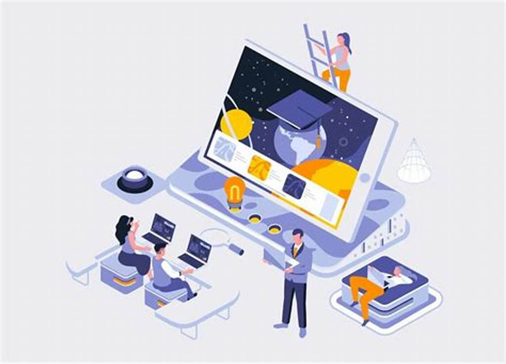
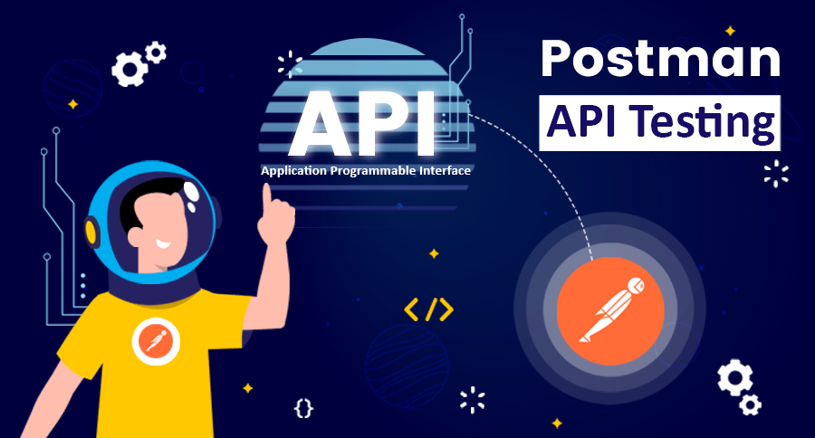
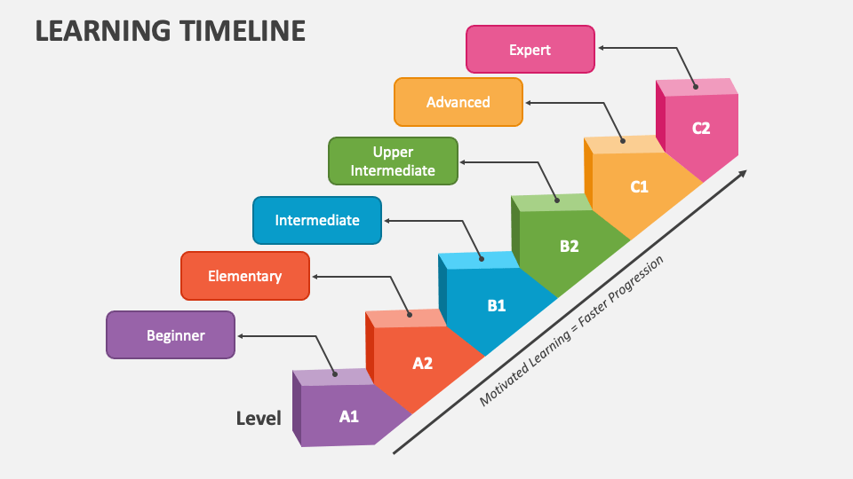

Intermediate Learning Path for IT Students

Now that you've mastered the basics, it's time to deepen your IT knowledge and skills. This intermediate path will help you specialize and build professional-level competencies in key IT areas.
Key Areas to Focus On:
- Object-Oriented Programming (Java/C#)
- Database Design and SQL
- Advanced Web Development (JavaScript, React/Angular)
- System Administration Basics
- API Development and Integration

Recommended Resources
Take your skills to the next level with these intermediate resources:
- The Complete JavaScript Course - Jonas Schmedtmann (Udemy)
- Database Systems Concepts - McGraw-Hill textbook
- Full Stack Open - University of Helsinki's free course
- Linux Command Line Basics - freeCodeCamp tutorial
- Postman API Testing - Official documentation
Intermediate Learning Timeline
Month 1-2: Advanced Programming
Dive deeper into programming concepts like data structures, algorithms, and design patterns. Build more complex applications.
Month 3-4: Database Mastery
Learn relational database design, normalization, and advanced SQL queries. Work with both SQL and NoSQL databases.
Month 5-6: Full Stack Development
Combine frontend and backend skills to build complete web applications. Learn about authentication, deployment, and DevOps basics.

Specialization Tracks

At the intermediate level, you should start considering specialization areas based on your interests:
Available Tracks:
- Web Development: Advanced frameworks, state management, PWA
- Data Engineering: ETL processes, data pipelines, analytics
- DevOps: CI/CD, containerization, cloud platforms
- Cybersecurity: Ethical hacking, network security, cryptography